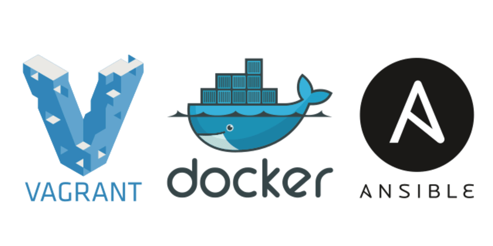

Guia Virtualización - Vagrant y Ansible
Table of Contents
- 1. Configuración
- 2. Utilizando Vagrant

Aviso: Esta es una sección que aún está en desarrollo, podría estar faltando contenido.
1 Configuración
1.1 Particionar disco
1.1.1 Crear particiones
Creamos dos particiones primarias y una SWAP
- Una particion primaria /home que usaremos como escritorio, le asignamos 20,50GB o el espacio que querramos
- Una partición primaria / que será para el sistema, le asignamos 8 GB
- Una SWAP para la memoria, asignamos 2GB
# iniciamos el proceso de particionar fdisk /dev/sda # presionamos 'n' para crear una particion # presionamos 'p' para listar las particiones creadas # presionamos 'w' para guardar los cambios # listamos las particiones, para verificar que aparezcan fdisk -l
Observación: La virtualbox bajada con vagrant solo necesitas crear 1 partición primaria /home, y formatear esta nueva.
1.1.2 Formatear particiones primarias
# cambiamos /dev/sda3 por el que aparezca cuando creamos las particiones primarias mkfs.ext4 /dev/sda3
Observación: En mi caso solo tuve que formatear una sola
1.1.3 Montar las unidades (Filesystem)
mkdir /mnt/home mount /dev/sda3 /mnt/home
1.2 Gestor de Paquetes
1.2.1 [TODO] Agregamos el pacstrap
Sino lo hacemos no podremos correr el comando pacstrap
# instalamos pkgfile yes | pacman -S pkgfile # lo actualizamos pkgfile --update pkgfile pacstrap # instalamos los scripts faltantes yes | pacman -S extra/arch-install-scripts
1.2.2 [TODO] Otros paquetes necesarios
pacstrap /mnt base base-devel
1.3 Configuramos la red
1.3.1 Modificamos la configuracion en hosts
Modificamos el archivo hosts mediante vim /etc/hosts y nos fijamos que quede de la siguiente manera
# agregamos lo siguiente 127.0.0.1 localhost ::1 localhost 127.0.0.1 arch-linux.localdomain arch-linux
1.3.2 Modificamos los DNS
Modificamos el archivo resolv.conf mediante vim /etc/resolv.conf y nos fijamos que quede de la siguiente manera
# agregamos lo siguiente nameserver 1.1.1.1 nameserver 8.8.8.8
1.4 Configuración GRUB
1.4.1 Instalación
# instalamos package grub pacman -S --noconfirm grub # instalamos el grub en el disco grub-install /dev/sda # Observación: # no tuve que crear el mkconfig porque ya estaba creada # pero dejo esta parte del código comentado por si se requiere # # grub-mkconfig -o /boot/grub/grub.cfg # creamos la configuración # passwd root # para cambiar la clave del root pacman -Syu # para actualizar el linux (es como un apt-get upgrade)
1.4.2 Agregamos la nueva unidad al filesystem
Modificamos el archivo fstab mediante vim /etc/fstab y revisamos que nos quede similar a lo siguiente
/dev/sda3 /home ext4 defaults 0 2
1.4.3 Referencias
- [Que son los sistemas de archivos - The Linux Documentation Project](http://www.tldp.org/pub/Linux/docs/ldp-archived/system-admin-guide/translations/es/html/ch06s08.html)
- [Breve introducción a los sistemas de archivo - Wiki Arch Linux](https://wiki.archlinux.org/index.php/File_systems_(Espa%C3%B1ol))
- [Que es el GRUB - Hipertextual](https://hipertextual.com/archivo/2014/08/que-es-grub/)
- [Configuracion del GRUB - Adminso](http://www.adminso.es/index.php/GRUB_-_Configuraci%C3%B3n)
- [Configuracion de GRUB 2 - Debian](https://www.debian.org/doc/manuals/debian-handbook/sect.config-bootloader.es.html)
1.5 Entorno gráfico
Para poder empezar a usar una interfaz gráfica
pacman -Syu # actualizamos la distribución de linux # instalamos el servidor para el entorno gráfico pacman -S --noconfirm -xorg-server # instalamos el escritorio Gnome pacman -S --noconfirm gnome gnome-extra # activamos el servicio del escritorio Gnome (se creará un enlace simbólico) systemctl enable gdm
1.6 Referencias
- [Configuración - Ver Video](https://www.youtube.com/watch?v=AdDw8qIQzW8)
- [Configuración # 1 - Ver Página](https://www.drivemeca.com/arch-linux-guia-de-instalacion/)
- [Configuración #2 - Ver Página](https://www.vagrantup.com/docs/cli/ssh_config.html)
2 Utilizando Vagrant
2.1 Conectarse a mariadb
Para evitar errores al conectarse ingresar la siguiente linea de comando
# pedirá la contraseña que ingresamos al momento de instalar mariadb-server mysql -u root -p
2.2 Compartir directorios
2.2.1 Procedimiento
Para compartir archivos y directorios entre la maquina local y la virtual
- Entramos al servidor `vagrant ssh`
- Creamos el archivo o carpeta en `~/vagrant/`
- Luego ya podemos acceder desde la maquina local en el directorio que tengamos el Vagrantfile
Por ejemplo
# creamos una carpeta mkdir ~/vagrant/curso-mysql # creamos un archivo sql touch ~/vagrant/archivo.sql
2.2.2 Referencias
- [Referencia #1 - Vagrantup](https://www.vagrantup.com/intro/getting-started/synced_folders.html)
- [Referencia #2 - Stackoverflow](https://stackoverflow.com/questions/18528717/vagrant-shared-and-synced-folders)
- [Referencia #3 - Drupalize](https://drupalize.me/videos/sharing-files-between-your-guest-and-host-machines?p=1526)
2.3 Ingresar Usuario por VirtualBox
2.3.1 Conceptos
El usuario por defecto es `root` y la contraseña `vagrant`
2.3.2 Referencias Web Extraoficiales
- [Referencia #1 ](https://bbs.archlinux.org/viewtopic.php?id=243685)
2.4 Redimensionar espacio en disco
- Instalar via terminal un plugin
vagrant plugin install vagrant-disksize
- Modificar la configuración llamado .Vagrant
config.vm.box = 'ubuntu/xenial64' config.disksize.size = '50GB'
- Reiniciar la máquina virtual
# detenemos la maquina vagrant halt # levantamos de nuevo vagrant up
2.5 Cambiar configuración SSH
2.5.1 Procedimiento
- Cambiar en el archivo .Vagrant
# si quiero cambiar el usuario al que se conecta config.ssh.username = 'root' config.ssh.password = 'MONICA'
2.5.2 Referencias
2.6 Posibles errores
2.6.1 Con Guest aditions
2.7 Plugins Recomendados
Algunos plugins utiles para usar con vagrant podrían ser:
- vagrant-disksize
- vagrant-vbguest